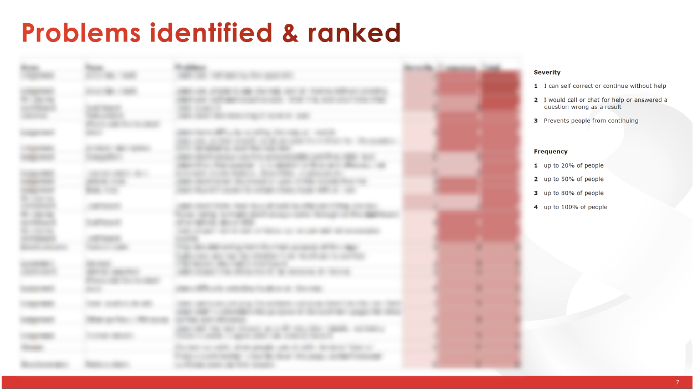

Exploratory user testing
With a prototype in hand we ran a group of exploratory moderated user testing sessions.
In this test
we asked users to imagine they were a user of Budget Direct and wanted to manage their policy
online.
Recruitment
We used Brisbane based recruitment platform Askable to screen and recruit 6 participants
representing an array of demographics that represent our typical user base. We split the tests
across both mobile and desktop to get a true representation of how our users typically interact
with
out platforms.
Set up
I translated the prototype from AdobeXD into Axure to give the participants a truly interactive
experience with our prototype. Axure allows us to capture and process information entered, so
we
were able to provide a real representation of what the finished product would look and feel
like.
For the purposes of the test we mocked up a mobile phone with an example of an authentication
SMS
that a user might receive. We provided the mock up as a paper print out and asked the
user
to image they had received the SMS on their personal mobile phone.
Test
We followed a typical moderated user testing format
- Introduction and rapport building
- Set the scene - “you need to make a car insurance claim right now, what would you do?”
- Observe
- Once the user found the login button we switched to a prototype and let them continue
- After their successful login we wrapped this section up with some questions around their general
sentiment towards to process
- What did you think of the process?
- Would you use it? If not what would make you want to use it?
- How secure do you think it is? Why?
- Do you feel secure using your phone number for identification?
The outcome
- No one had a problem!
- Everyone got through with no errors
- They recognised the PIN process from other websites eg. Banking
- Generally, they didn't have any security concerns
- People generally didn't notice the difference between the fist login and the second
- Because people enter from different places there is an opportunity to make the process
smoother by personalising the title (eg: claiming, maintain their policy)
Gather and prioritise
With a growing collection of information from user feedback analysis as well as user
testing we began to group themes amongst our findings and prioritized them based on the impact
to the user journey. We emphasized the problems that would completely prevent users from
logging in, as they went against our earlier defined goals.
Present to the business
From there we presented our findings back to the business, providing key stakeholders with
much
needed insights into the new journey and our findings. We recommended changes and important
pieces of work that should be completed prior to go-live. Armed with this information,
the
business decided to move forward with their current solution, regardless of our findings.
The business also wanted to decommission the legacy email and password login in tandem with
the
release of the OTP login. We strongly advised against this as we had no idea how
successful
the
new OTP login would be, and how dependent users would be on this legacy login. We
suggested
monitoring the success rate and impact on chat periodically to determine when our users
would be ready for such a change, to which the business agreed.
